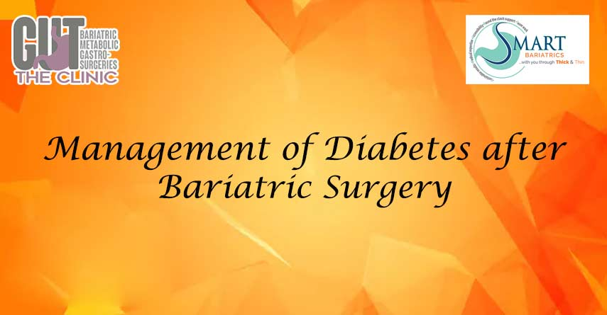

In the rapidly evolving landscape of construction project management, adaptability and real-time data access have become critical. As projects grow in complexity and scope, professionals increasingly seek innovative digital solutions that offer comprehensive oversight, mobility, and integration. Mobile platforms, in particular, are transforming how construction teams coordinate, monitor, and execute their work, ensuring efficiency and accountability at every stage.
Understanding the Importance of Mobile-First Tools in Construction
Construction projects today are not constrained to the office or site trailers—they encompass a dynamic environment where timely decisions can significantly influence outcomes. According to industry reports, over 65% of project delays are attributable to communication breakdowns, often worsened by fragmented information channels. Mobile tools that centralize data and offer instant access are a game-changer; they facilitate immediate issue resolution, document sharing, and task updates, thereby reducing delays and cost overruns.
| Benefit | Impact |
|---|---|
| Real-time Data Access | Enables instant decision-making and reduces rework |
| Streamlined Communication | Ensures all stakeholders are aligned on progress and issues |
| Enhanced Document Control | Facilitates quick retrieval of plans, permits, and logs |
| Improved Safety Compliance | Instant reporting and hazard notifications reduce incidents |
Case Study: Digital Adoption on Major Construction Sites
Leading industry players report tangible productivity gains after integrating mobile solutions, such as Tower Build, into their workflows. For instance, one commercial developer noted a 20% reduction in project turnaround time within the first six months of deployment. This was achieved through seamless communication, better resource allocation, and proactive safety management.
"The ability to access and update project information on-site, directly from our smartphones, has fundamentally changed our approach to construction management," — Senior Project Manager, BuildWell Corp.
Integrating Advanced Mobile Platforms: The Case for Tower Build
Among the suite of mobile management tools emerging in the industry, see how Tower Build works on mobile offers a comprehensive interface that consolidates project schedules, safety reports, document sharing, and progress tracking into a single, user-friendly platform. Its intuitive design and robust features make it an ideal choice for firms aiming to leverage technology for operational excellence.
Why Industry Leaders Are Turning to Tower Build
Empirical data underscores that companies adopting integrated mobile platforms like Tower Build are experiencing dramatic improvements in project control:
- 70% faster issue resolution
- 30% reduction in administrative overhead
- Enhanced compliance and safety standards adherence
This shift reflects a broader industry trend towards harmonizing digital technologies with traditional construction workflows, leading to smarter, safer, and more efficient projects.
Future Outlook: Mobile Solutions as Standard Practice
As Augmented Reality (AR) and Artificial Intelligence (AI) become more widespread, mobile platforms will serve as the backbone for even more sophisticated construction management tools. The convergence of these technologies promises real-time predictive analytics, remote site inspections, and automated safety protocols, further elevating industry standards.
Conclusion
In an era where project delivery timelines and quality control are scrutinized more than ever, mobile construction management solutions like Tower Build stand at the forefront of industry innovation. Their ability to streamline workflows, improve communication, and provide instant access to critical data makes them indispensable assets for modern construction firms.
To understand the practical capabilities of such solutions, especially on the go, professionals are encouraged to see how Tower Build works on mobile.
Back to Blog